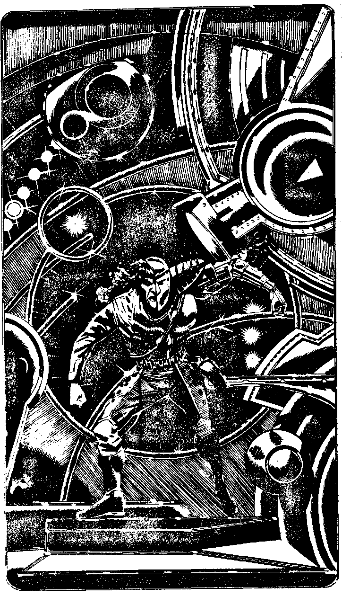

412
As you step through, a worker droid rushes to repair the hole you have made as air starts to whistle out into the tunnel. You have entered a colossal circular room which is crammed with computer banks. Coloured lights flash as fast as the eye can see. Yelov has, unwittingly, led you to the Central Computer. This enormous room is a single computerised brain which controls the whole of the factory planet. You marvel at its size but remembering the complexity of the task it fulfils you are not surprised it throws out enough light to illuminate a small city. Yelov is standing in front of the computer which is the brain of Mechanon, Its tones are very calm and reassuring, but it is saying, There is an organic hostile within my perimeter, Yelov. You assured me that this could never happen. Mechanon is at risk - exterminate the being at once.' Yelov spins to look at you and there is a frown of concentration on his face. He is trying to exert the power of his will over yours. His mind is strong and his will to live burns as hotly as ever. If yours does not, you will lose this battle of wills. Make a Power of Will Roll.
| 7,8,9,10,11,12 | Turn to 403 |
| 2,3,4,5,6 | Turn to 392 |